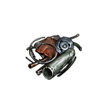

Получено: файл; исходный URL. Изображение подписано на странице-источнике; файл получен с зеркала. Совпадение с оригиналом не проверено. Страница: источник.


Металлолом
Мой Мир; публикация 15.07.2011; редакция неизвестна- Тип
- Материалы
- Покупка
- нет данных
- Продажа
- нет данных
- Как получить
- Металлолом появляется при копании объектов на фермах (ВКонтакте, ZOMBIA; требует сверки).
- Применение
- нет данных
- Особенности
- нет данных
- Версия и дата
- Мой Мир; публикация 15.07.2011; редакция неизвестна
Данные по источнику · Мой Мир · публикация 15.07.2011; редакция неизвестна
Предварительно: историческая статья, требует сверки. Требуется сверка.
- Получение · Мой Мир, исторически
- Копка кладов у друзей
- Производство / условия · Мой Мир, исторически
- Количество зависит от найденной железяки.
Данные по источнику · ВКонтакте, ZOMBIA · 16 Августа 2011, 20:10; дата редакции не установлена
Предварительно: Данные одной исторической фанатской страницы; цифры и подписи изображений требуют сверки. Описание и условия сохранены по колонкам без додумывания.. Требуется сверка.
- Описание материала
- [изображение: зомби ферма, зомби мания, металлолом] Металлолом
- Участвует в строительстве
- нет текстовых данных; возможны неподписанные изображения
- Как достать
- Металлолом появляется при копании объектов на фермах
- Участвует в создании
- нет текстовых данных; возможны неподписанные изображения
Данные по источнику · браузерная Зомби Ферма / Зомби Мания; платформа требует проверки · дата URL не гарантирует дату редакции
Предварительно: Индивидуальная страница прочитана автоматически, подписи значков могут содержать ошибки; даты редакции и независимость от ЗомбиСити не установлены.. Требуется сверка.
- Основной блок страницы и подписи изображений
- Материал [иллюстрация: Металлолом] Металлолом Нельзя купить. Цена продажи: 1 [иллюстрация: Монеты] Металлолом - очень распространенный материал игры Зомби Ферма. Его отличительная особенность - Металлолом имеет несколько обличий, у каждой из которых - своя значимость. Так, Труба содержит в себе 1 единицу Металлолома, а Якорь - целых 120. Попадая на склад, эти металлические предметы становятся одной сплошной кучей Металлолома. Металлолом приносят Рыбаки, он есть в яйце: Рыбак [иллюстрация: Рыбак] Рыбак с мозгами [иллюстрация: Рыбак с мозгами] Бендер-сюрприз [иллюстрация: Бендер-сюрприз] Металлолом лучше всего копать под: Эйфелевая [иллюстрация: Эйфелевая] Японский храм [иллюстрация: Японский храм] Пруд [иллюстрация: Пруд] Металлолом участвует в создании материала: Сталь [иллюстрация: Сталь] = 200 Металлолом [иллюстрация: Металлолом] + 5 Черная рука [иллюстрация: Черная рука] [иллюстрация: Стрелка] Повара [иллюстрация: Повара] Виды Металлолома (попадая на склад, эти вещи становятся кучей металлолома): Труба [иллюстрация: Труба] Сковородка [иллюстрация: Сковородка] Кастрюля [иллюстрация: Кастрюля] Котелок [иллюстрация: Котелок] Гиря [иллюстрация: Гиря] Батарея [иллюстрация: Батарея] Ограда [иллюстрация: Ограда] Люк [иллюстрация: Люк] Рельса [иллюстрация: Рельса] Штанга [иллюстрация: Штанга] Якорь [иллюстрация: Якорь]
Связанные сущности
- Пруд — упоминается в статье о Пруде